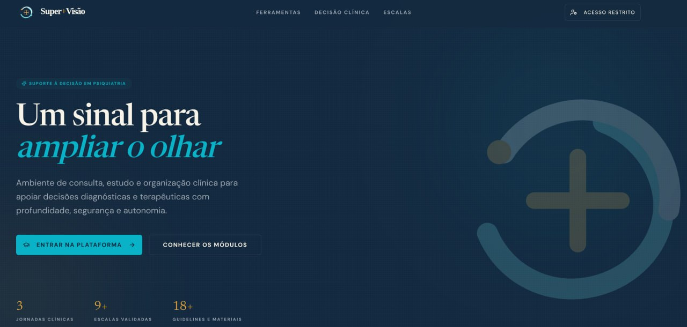
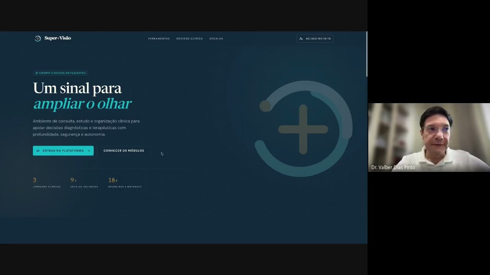
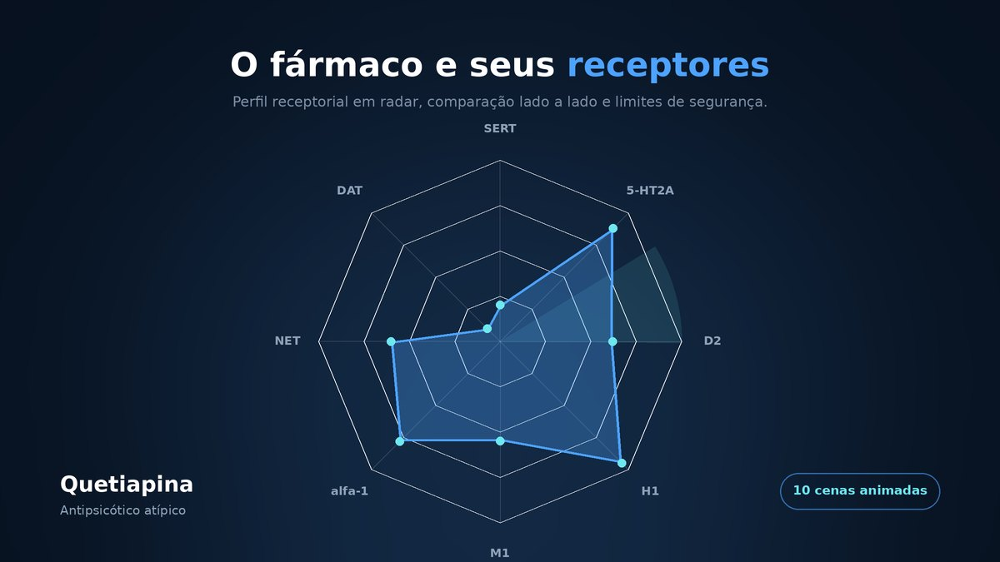
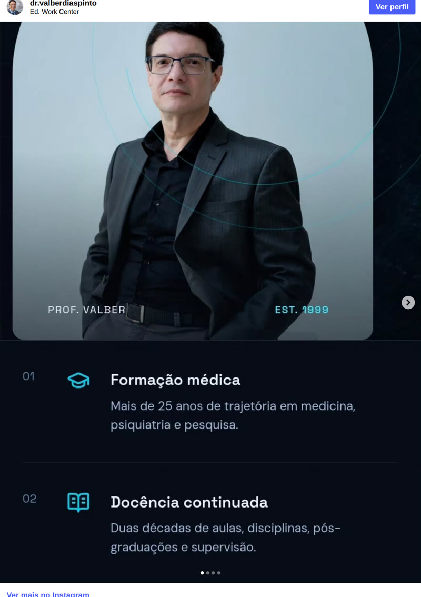
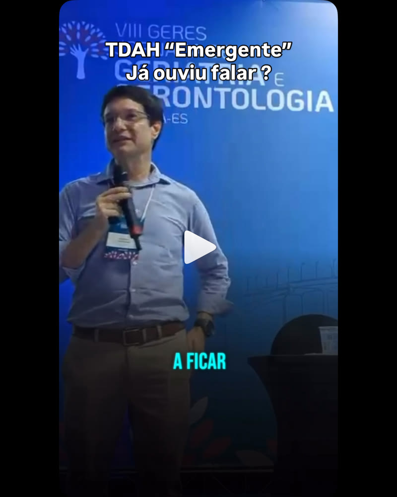
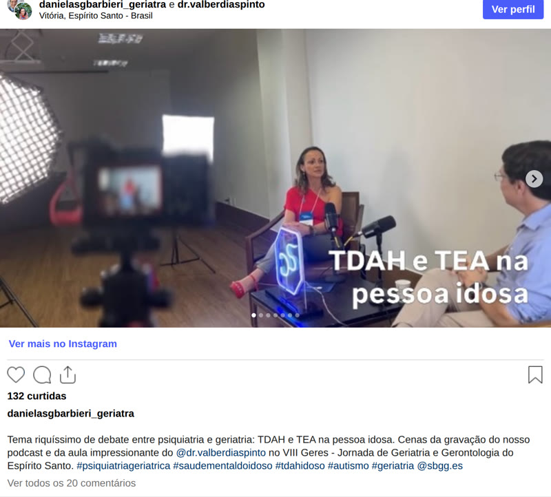
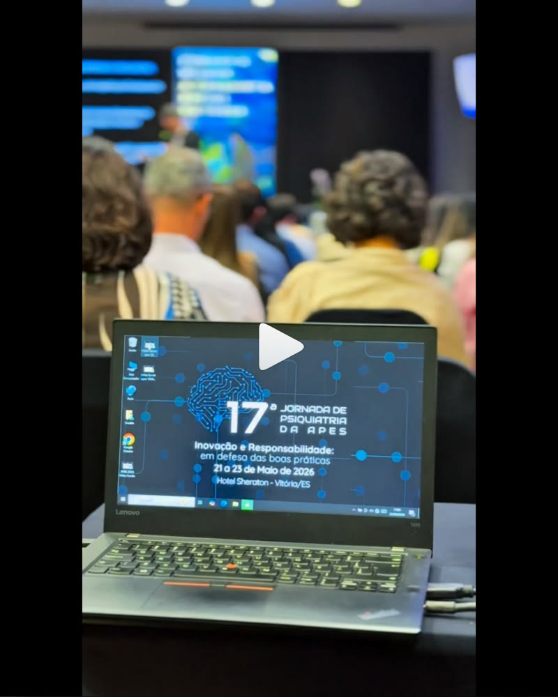

Para médicos • Residência, pós-graduação e aprimoramento
Você não está sozinho nessa jornada. Uma plataforma criada por especialistas para apoiar médicos em residência, pós-graduação ou aprimoramento clínico — com conteúdo de qualidade e supervisão em diferentes formatos.

Conhecer a plataforma →“A prática clínica se fortalece quando é compartilhada.” Dr. Valber Dias Pinto · Psiquiatra e psicoterapeuta

★ Destaque · Aula de lançamento
“Mentoria 1 — Lançamento do Aplicativo de Mentoria Super+Visão”, no canal Dr. Valber Dias Pinto no YouTube. Se você quer entender o que a mentoria entrega — e como a plataforma apoia a decisão clínica no dia a dia — comece por esta aula.
A plataforma
Um ambiente digital pensado para o dia a dia da clínica: você prepara, decide, aprofunda e organiza — com o material certo na hora certa.
01
Roteiros de anamnese e formulação de caso para organizar o raciocínio antes da conduta.
02
Instrumentos com aplicação, pontuação e interpretação reunidos em um só lugar.
03
Mecanismos, perfis de efeito, interações e ajustes — conectados à decisão clínica.
04
Recursos de condução e manejo para sustentar o processo terapêutico.
05
Diretrizes, evidências e leituras de apoio, com curadoria.
06
Journal e Pomodoro para transformar estudo em rotina sustentável.
07
Histórico dos encontros e dos casos discutidos, para não perder o fio.
08
Seleção de conteúdo e trilhas indicadas pelo Dr. Valber.
09
Seu ambiente, com seus materiais e sua trilha de evolução.
A plataforma é um ambiente de estudo e apoio à decisão clínica. [REVISAR] confirmar a descrição exata do módulo “Acesso Personalizado” e se todos os nove módulos estão liberados em todos os planos (hoje o texto dos planos fala em “acesso completo aos conteúdos”, sem detalhar por módulo).
Por dentro
Dez cenas animadas mostram como os módulos funcionam na prática: o raciocínio diagnóstico se formando a partir dos achados, a escala cruzando o ponto de corte, o perfil receptorial de cada fármaco e o caminho que um caso percorre até voltar comentado pelo mentor.

▶ Abrir apresentação →Abre aqui mesmo, em tela cheia, e no celular abre na versão vertical. Use as setas ou role para passar de cena. Preferindo, abra em outra aba ↗
1min16 · amostra de aula · material de finalidade educacional
Aula aberta · Farmacologia clínica
Em vez de decorar classes — “antidepressivo”, “antipsicótico”, “ansiolítico” — você aprende a ler o fármaco em quatro camadas: sistema → molécula-alvo → ação sobre o alvo → consequência de rede. É o eixo de raciocínio NBN (Neuroscience-Based Nomenclature), aplicado a casos.
Nesta amostra, o caso do perfil multidomínio da Agomelatina: agonismo melatonérgico (MT1/MT2) e antagonismo serotoninérgico (5-HT2C / 5-HT2B), com o resultado funcional integrado em ritmo, sono e drive cortical — e a distinção que organiza toda a leitura: efeito downstream pertence ao resultado funcional e não altera o modo de ação direto.
A mesma lógica de leitura sustenta o módulo de Farmacologia Clínica da plataforma e as ferramentas do psicofarmaco.org (matriz de afinidade, perfis por receptor, enzimas CYP).
★ Novo · Entra na mentoria
Assista à aula de lançamento: 53 minutos em que o Dr. Valber apresenta o curso de psicofarmacologia que passa a integrar a mentoria, a lógica de leitura do fármaco que ele adota e como esse raciocínio chega à decisão do dia a dia.
Como funciona
A supervisão não substitui a formação médica — ela organiza o que você já sabe e amplia o que você consegue ver no caso.
Instrumentos e roteiros para chegar à consulta com método.
Discussão de casos reais para treinar a decisão, não só a informação.
Farmacologia e psicoterapia conectadas à prática, com evidência.
Registro dos casos, leitura dirigida e constância de estudo.
Veja em movimento
Uma apresentação animada do que a Super.Visão reúne: os módulos de estudo, o raciocínio diagnóstico, a farmacologia clínica e a supervisão em grupo e individual.
Cuidar da sua prática também é investir em vidas.
Quer participar?
Esta página é só o conteúdo. Para conhecer os formatos — plataforma, supervisão em grupo, combo ou supervisão individual — e os valores, abra a página de planos.
Ecossistema
A Super.Visão faz parte de um conjunto de ambientes clínicos — cada um com uma função.
Plataforma
super-visao.com
Ambiente de estudo, apoio à decisão clínica e registros de supervisão. Acesso restrito a assinantes.
Referência farmacológica
psicofarmaco.org
Bancada de estudo em saúde mental: matriz de afinidade, perfis por receptores, enzimas CYP, comparações e diretrizes CANMAT.
Institucional
drvalber.com.br
Docência, aulas e palestras, produção acadêmica e canais de contato do consultório.
Formação
drvalber.com.br/aulas-e-palestras
Atividade acadêmica e temas em aula no momento, para conhecer o estilo de ensino antes de assinar.
Quem conduz
Médico psiquiatra e psicoterapeuta em Vitória (ES), com quase duas décadas de docência e atuação clínica em transtornos de humor, transtorno bipolar, TDAH em adultos, ansiedade e burnout. A supervisão nasce da prática: casos reais, decisões reais, condução ética.
Psiquiatria e psicoterapia Docência em medicina CANMAT 2023 Farmacologia clínica
Ética • Ciência • Humanidade • Vidas reais Juntos por uma prática clínica mais consciente e humana.
Dúvidas frequentes
É um sistema de suporte à prática clínica em psiquiatria: uma plataforma de estudo e apoio à decisão (avaliação, escalas, farmacologia clínica, manejo psicoterápico, biblioteca e organização do estudo) somada à supervisão clínica — em grupo ou individual — conduzida pelo Dr. Valber Dias Pinto.
A supervisão parte de casos reais: você leva a demanda, e o encontro organiza o raciocínio diagnóstico e a conduta. Ela não substitui a formação médica — organiza o que você já sabe e amplia o que você consegue ver no caso.
Para médicos em residência, pós-graduação ou aprimoramento em psiquiatria. O conteúdo trata de decisão diagnóstica e de conduta medicamentosa, por isso é de uso exclusivo por médicos.
A plataforma e a supervisão são destinadas a médicos — em residência, pós-graduação ou aprimoramento em psiquiatria — porque o conteúdo trata de decisão diagnóstica e de conduta medicamentosa, e o cadastro solicita CRM. Se você é de outra área e tem interesse no material, fale pelo WhatsApp para saber o que está disponível para o seu caso.
Não. A Super.Visão é um ambiente de estudo e supervisão clínica para médicos em formação ou aprimoramento em psiquiatria. Não constitui formação médica, consulta, diagnóstico ou tratamento de pacientes, e não substitui as diretrizes das entidades de classe.
No dia a dia
Conteúdo clínico aberto no Instagram @dr.valberdiaspinto — 7.735 seguidores e 431 publicações: aulas, jornadas, casos e bastidores da construção da plataforma. É o mesmo olhar que conduz a mentoria.
3 Coisas Que Você Não Deveria Comprar Para Proteger Sua Saúde Mental
"Abordando a relação entre atividade física, alimentação e saúde mental. Em recente colaboração com o jornal…
Conheça um pouco da história da Plataforma Super+Visão!

PostNovo Site no Ar🎉🎉🎉 Mas não é só o site que é novo, ele marca uma mudança de fase e foco num novo propósito! 👀…
O que você faz quando um paciente coloca espiritualidade na sessão de terapia? A maioria das formações em…

ReelsO TDAH pode se apresentar de várias maneiras ao longo da vida e geralmente o quadro é flutuante… veja esse…

PostTema riquíssimo de debate entre psiquiatria e geriatria: TDAH e TEA na pessoa idosa. Cenas da gravação do…

ReelsDois dias de muito aprendizado, troca de experiências, encontros e reflexões sobre os caminhos da saúde…
Faça parte
Se o conteúdo faz sentido para o seu momento, os formatos e valores — plataforma, supervisão em grupo, combo ou supervisão individual — estão na página completa.